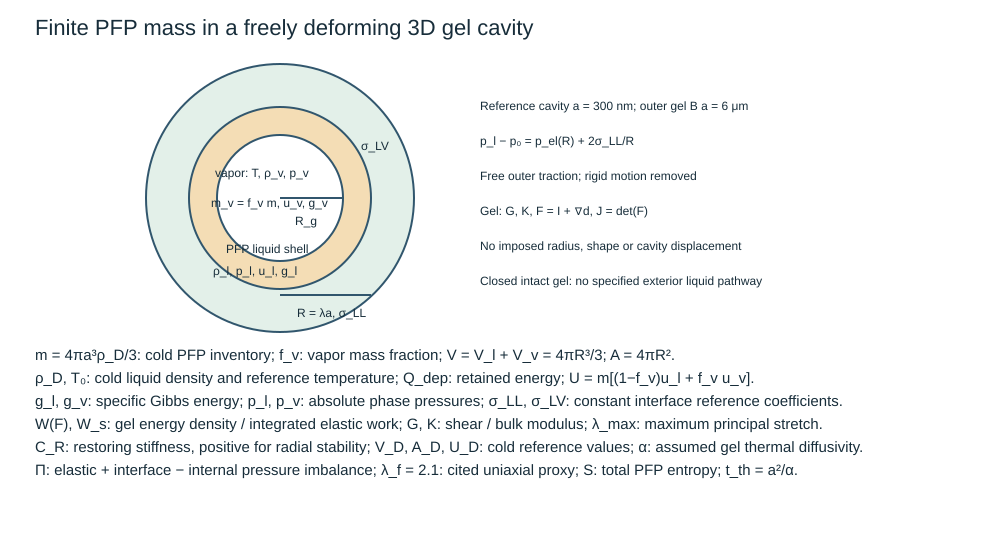
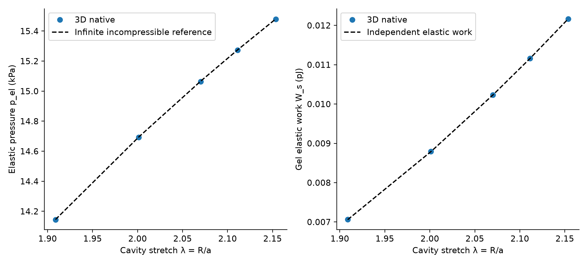
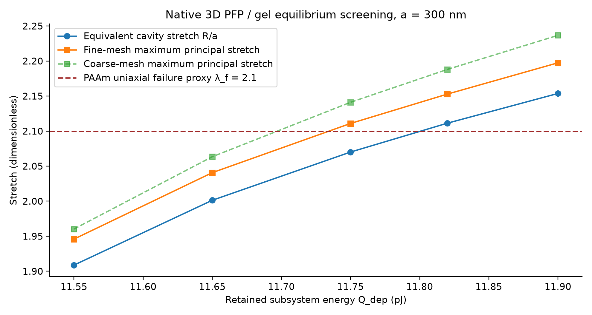

absorbed energy is the entry to the physical chain, but its conversion into local PFP energy is unknown. Model B solves a supplied post-activation finite-energy equilibrium and screens elasticity; it does not calculate nucleation probability.
吸收能量是物理链条的起点，但转化为局部 PFP 能量的比例未知。模型 B 求解给定激活后的有限能量平衡，并筛查弹性；不计算成核概率。
Here P_inc is optical power (W), q̇_abs is local absorbed heat rate per volume (W/m³), t is time and V is volume. Q_inc and Q_abs are energies (J).
此处 P_inc 为光功率（W），q̇_abs 为局部单位体积吸收热率（W/m³），t 为时间，V 为体积；Q_inc 与 Q_abs 为能量（J）。
The draft’s 808 nm, 20 ms Si reference gives incident energy 0.436828 J from the stated calibration, while its integrated heat source gives 0.22752 J. Their difference is unreconciled. Neither value specifies the pJ/nJ retained in a PFP inclusion. The pulse is milliseconds; nanosecond PFC papers use other absorbers and cannot replace it.
初稿的 808 nm、20 ms 硅参考条件依据其标定给出入射能量 0.436828 J，而积分热源给出 0.22752 J。差异尚未解释。二者都未确定 PFP 包含物保留的 pJ／nJ 能量。该脉冲为毫秒；纳秒 PFC 文献采用其他吸收体，不能直接替代。

Use the exact EOS functions p(T,ρ), u(T,ρ), g(T,ρ). The phase pressures differ: applying the same flat saturation pressure to both ignores curvature. Internal energy already carries phase conversion energy; adding a separate latent-heat term would count it twice. Accepted states must keep 0<f_v<1 and vapor radius well above the numerical floor.
使用精确 EOS 函数 p(T,ρ)、u(T,ρ)、g(T,ρ)。两相压力不同：将同一平面饱和压力用于两相会忽略曲率。内能已包含相变能，再加独立潜热项会重复计数。接受状态要求 0<f_v<1，汽核半径远大于数值下限。
The analytic law is an infinite, incompressible spherical reference. The native model uses B=20 and K/G=1000, a free outer traction, only rigid-motion suppression, a follower pressure and variational surface energy. Its cavity radius and shape are not prescribed. λ is an initial guess parameter; R/a is the solved outcome.
解析定律是无限、不可压球形参考。原生模型采用 B=20、K/G=1000、外边界自由牵引，仅抑制刚体运动，并施加随动压力及变分表面能。空腔半径与形状未被规定。λ 参数用于初猜；R/a 是求解结果。


At 11.55 and 11.65 pJ the native local maxima stay below 2.1 with numerical margin. At 11.75 pJ the result is borderline; at 11.82 and 11.90 pJ even equivalent cavity stretch exceeds 2.1. This uniaxial PAAm proxy does not certify equibiaxial cavity failure, the current formulation or rapid loading. Four 13 pJ sensitivity states all exceed it.
11.55 与 11.65 pJ 的原生局部最大伸长在数值裕量下低于 2.1；11.75 pJ 属边缘情形；11.82 与 11.90 pJ 连等效空腔伸长也超过 2.1。该单轴 PAAm 替代判据不能认证空腔双轴失效、当前配方或高速加载。四个 13 pJ 敏感性状态均超过该判据。
The independent reference gives positive C_R at fixed closed energy and negative C_R at fixed temperature. The bulk-saturation heating lower bound is 11.5496 pJ; λ=2.1 corresponds to 11.8001 pJ. A mathematical energy interval exists, but a finite nucleus and an intact activation path are not established. With assumed water-like thermal properties, t_th≈0.631 μs, far shorter than 20 ms.
独立参考在固定封闭能量下给出正 C_R，在固定温度下给出负 C_R。加热至体相饱和的能量下界为 11.5496 pJ；λ=2.1 对应 11.8001 pJ。数学上的能量区间存在，但有限汽核及完整激活路径未被证实。假设水样热物性时，t_th≈0.631 μs，远短于 20 ms。
Model B node recipe / 模型 B 节点说明 · PAAm source PDF / PAAm 来源
Rebuild the free cavity and finite PFP closure from a blank 3D model. Reproduce the 11.65 pJ state and compare elastic pressure/work with the analytic limit. Predict, then test, the 13 pJ stronger-gel sensitivity. State precisely which compatibility claim the evidence supports.
从空白三维模型重建自由空腔与有限 PFP 闭合。重现 11.65 pJ 状态并与解析极限比较弹性压力／功。先预测再检验 13 pJ 的更强凝胶敏感性。准确说明证据支持何种兼容性结论。
At 11.65 pJ, λ=2.001276, T=339.197 K, f_v=0.168132 and local maximum stretch=2.040679. For G=10 kPa, p_el≈14.69 kPa. At 13 pJ the baseline λ≈2.5442; increasing G to 27.027 kPa gives λ≈2.2545, still above the proxy. This verifies an elastic equilibrium screen, not a safe laser-triggered or repeated operating point. Before recomputing the sensitivity study, use the documented sensitivity initial guesses.
11.65 pJ 时，λ=2.001276、T=339.197 K、f_v=0.168132，局部最大伸长为 2.040679。G=10 kPa 时 p_el≈14.69 kPa。13 pJ 的基准 λ≈2.5442；G 增至 27.027 kPa 后 λ≈2.2545，仍超出替代判据。此结果核验弹性平衡筛查，不能证明安全激光触发或重复运行。在重算敏感性研究前，使用文档中的相应初猜。
Ask the agent about any unclear sign, equation, node or assumption. Reply with a brief synthesis or one rebuilt observable; do not copy the reference answer.
任何符号、方程、节点或假设不清楚时，请询问智能体。用简短综合或一个重建观测量作答，无须抄写参考答案。